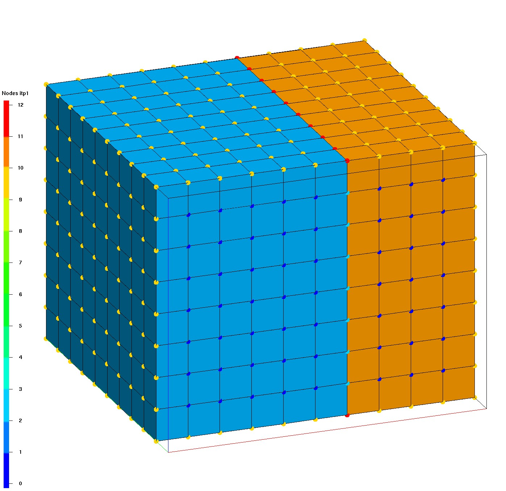
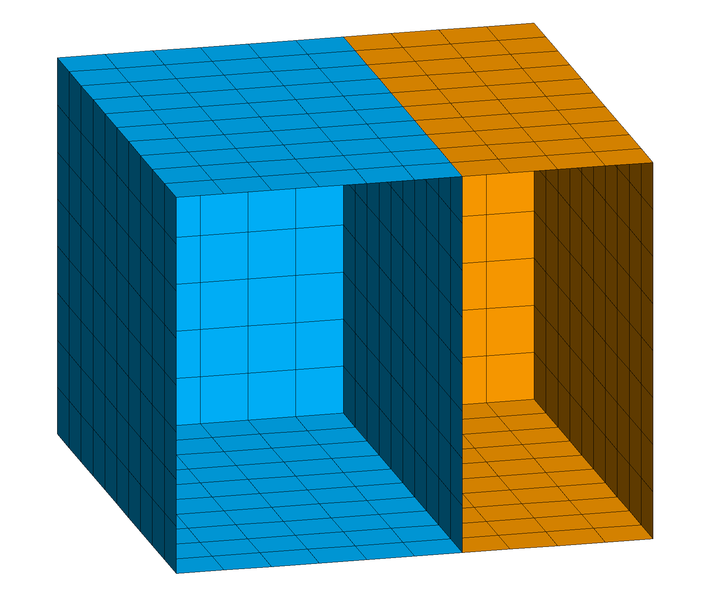
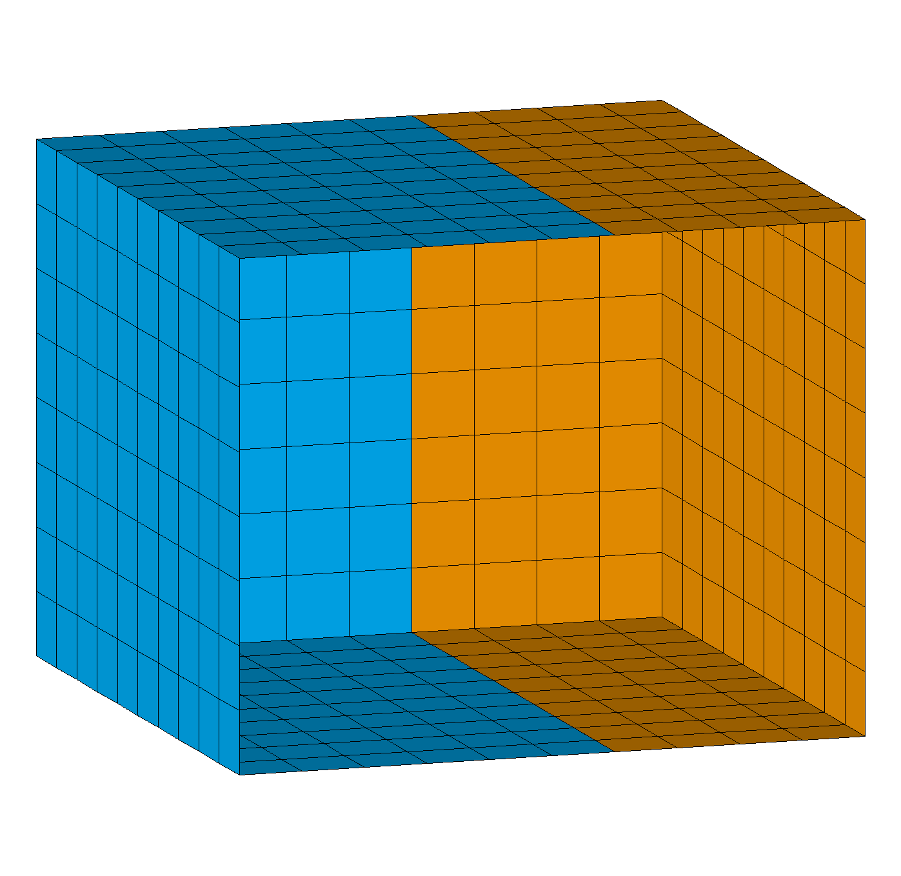
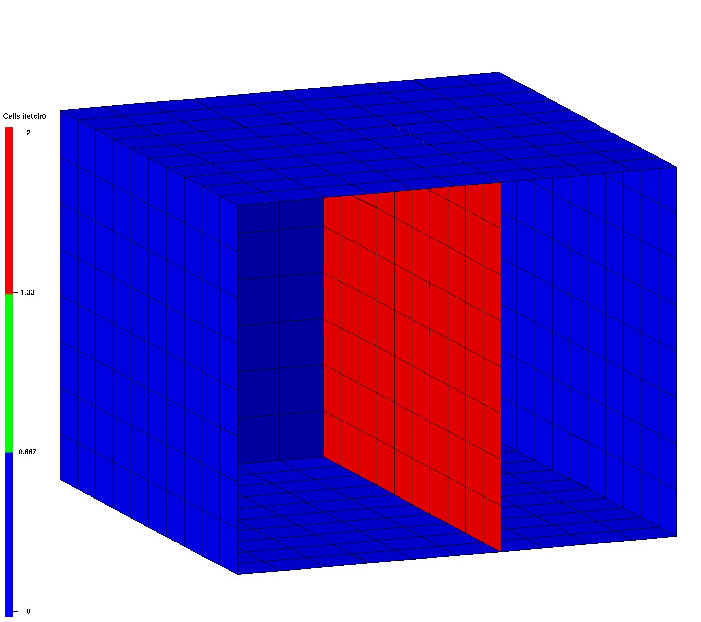
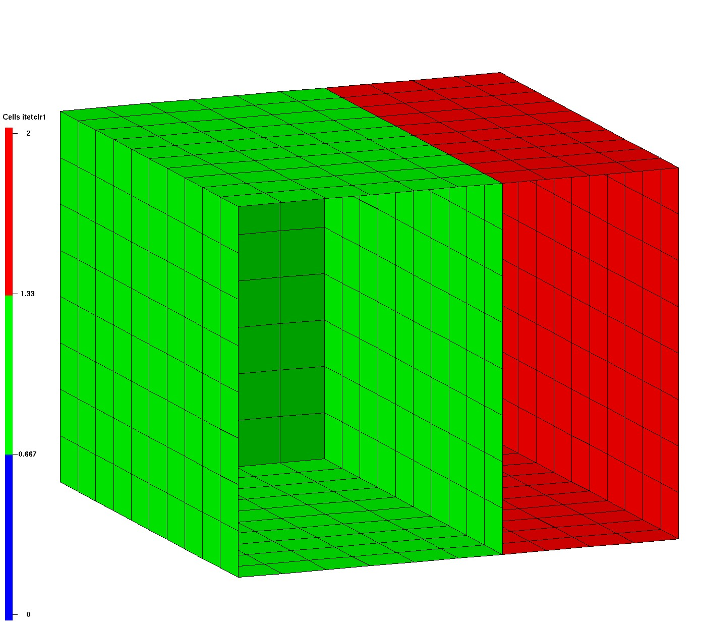
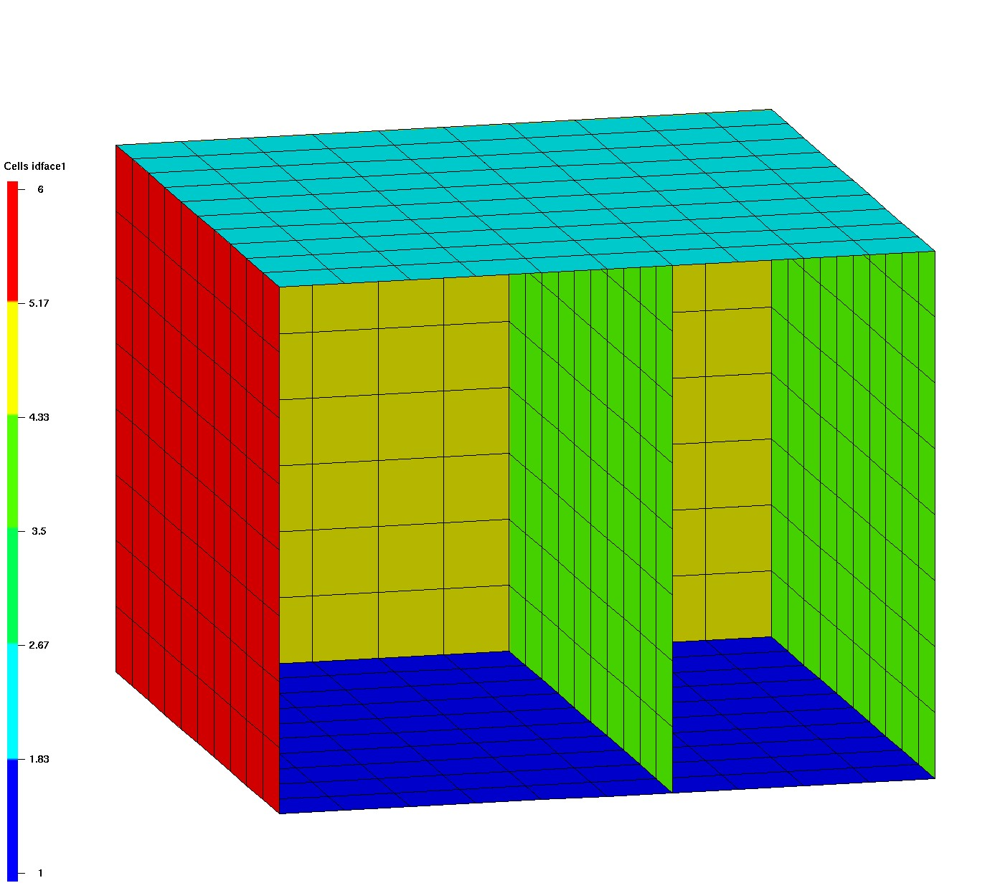
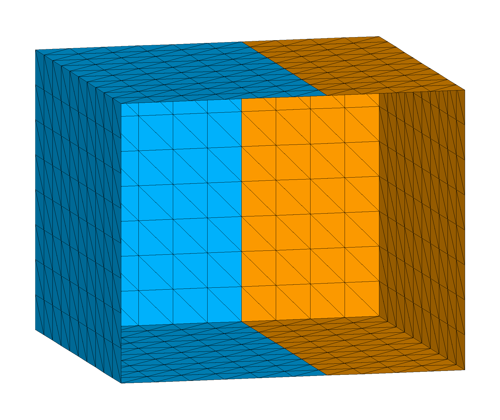
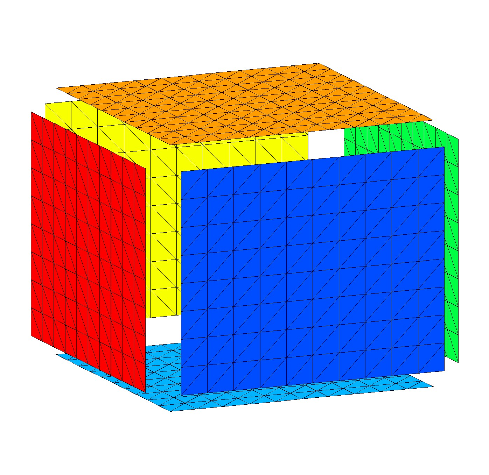

For syntax and description see EXTRACT_SURFMESH.
For usage with ExodusII files see DUMP EXO.
This demonstrates the difference between extracting all interfaces and boundaries and extracting external boundaries only.
The LaGriT input and output report file are included below.
| Input Hex Mesh | surfmesh all | surfmesh external |
|  |  |  |
| Hex mesh colored by itetclr material, nodes show itp values (clip front) | extract all boundaries and interfaces, color by itetclr1 (clip front) | extract external boundaries only, color by itetclr1 (clip front) |
The first image shows the input hex mesh with 2 materials, one internal interface, and a simple box shaped boundary. The interface and boundary nodes are tagged with the appropriate itp values. See more about mesh object attributes at Mesh Object. The itp values are shown in the image as round points:
The middle image shows the quad surface extracted from the hex mesh with the default option of all boundaries and interfaces.
The third image shows the quad surface extracted from the hex mesh with the option external which ignores internal interfaces. Only the external boundary surface is created.
The surface element type will depend on the element face being extracted, a hex element will produce a quad surface, a tet element will produce a tri surface.
New mesh object attributes are added to the output mesh. Use commands cmo/status and cmo/printatt to see these attributes. The output from these commands are included in the example LaGriT input and output below.
Six new element attributes and one node attribute, are added to the output mesh object.
| itetclr0 | itetclr1 | idface0 | idface1 |
|  |  |  | |
| between 0 and max material number | between 1 and max material number | between 0 and 6 | between 1 and 6 |
This demo uses the grid2grid command to convert each quad element to 2 triangles each. Some of the extracted quad mesh objects will no longer have values that make sense, particularly the itetclr0, idface0 etc attributes that have values from the oritinal hex mesh. These attributes can be removed with the cmo/DELATT/ command.
After the triangle mesh is created, we can set the materials based on normals in 6 directions. This is a quick way to check that triangles have outward pointing normals. Use the command settets/normal.
Note: after quad elements are split into tri elements, the extract/surfmesh attributes no longer apply.
| convert quad to tri | settets normal |
|  |  |
| external quads to 2 triangles each (clip front) | triangles colored by 6 normal directions (exploded view) |
LaGriT command file:
# CREATE hex mesh
define MO_MESH mo_hex
define/R0/ 0.0
define/Z0/ 0.0
define/R1/ 10.0
define/Z1/ 8.0
define/ND/ 11
define/NZ/ 9
cmo / create / MO_MESH / / / hex
createpts/brick/xyz/ND ND NZ/R0 R0 Z0/R1 R1 Z1/1 1 1
# COLOR elements material 1 and material 2
pset/p2/attribute xic/1,0,0/ gt 6.
eltset/e2/ inclusive pset,get,p2
cmo / setatt / MO_MESH / itetclr 1
cmo / setatt / MO_MESH / itetclr eltset,get,e2 2
# SET BOUNDARIES AND INTERFACES
resetpts/itp
dump/avs/box.inp/ MO_MESH
# EXTRACT ALL EXTERNAL AND INTERFACE BOUNDARIES
# Set material itetclr to attribute itetclr1
extract/surfmesh/1,0,0/ mos_all / MO_MESH
cmo/copyatt/ mos_all mos_all / itetclr itetclr1
# EXTRACT EXTERNAL ONLY
# Set material itetclr to attribute itetclr1
extract/surfmesh/1,0,0/ mos_ext / MO_MESH / external
cmo/copyatt/ mos_ext mos_ext / itetclr itetclr1
# CONVERT QUADS to TRI
# Set material itetclr to normals in 6 directions
grid2grid/quadtotri2/ mos_tri / mos_ext
cmo/select/mos_tri
settets/normal
# write files
dump/avs/ surfmesh_all.inp / mos_all
dump/ surfmesh_all.gmv / mos_all
dump/avs/ surfmesh_external.inp / mos_ext
dump/ surfmesh_external.gmv / mos_ext
dump/avs/ surfmesh_ext_tri.inp / mos_tri
dump/ surfmesh_ext_tri.gmv / mos_tri
# report status of all mesh objects
cmo/status
# report attribute min max for mos_all
cmo/printatt/mos_all/ -all- minmax
finish
Command to view min and max of extracted quad surface mos_all attributes:
cmo/printatt/mos_all/-all- minmax
Sample output:
ATTRIBUTE NAME MIN MAX DIFFERENCE LENGTH -def- 0.00000E+00 0.00000E+00 0.00000E+00 585 scalar 1 1 0 1 vector 3 3 0 1 nnodes 585 585 0 1 nedges 0 0 0 1 nfaces 0 0 0 1 nelements 600 600 0 1 ... imt1 1 1 0 585 itetclr 1 2 1 600 ... idnode0 1 1089 1088 585 idelem0 0 797 797 600 idelem1 1 800 799 600 facecol 1 3 2 600 idface0 0 6 6 600 idface1 1 6 5 600 ...
{kind=link}
{kind=link}
{kind=link}
{kind=link}
{kind=link}
{kind=link}
{kind=link}
{kind=link}
{kind=link}